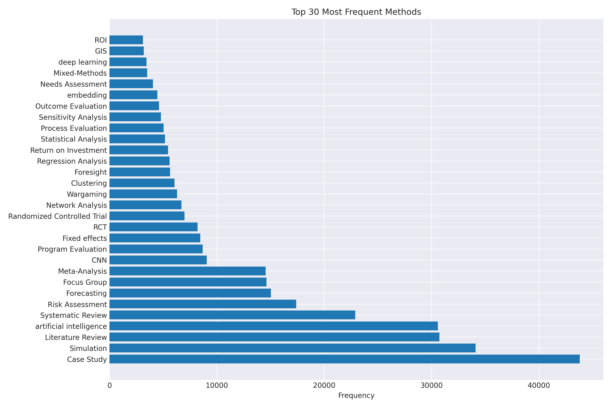
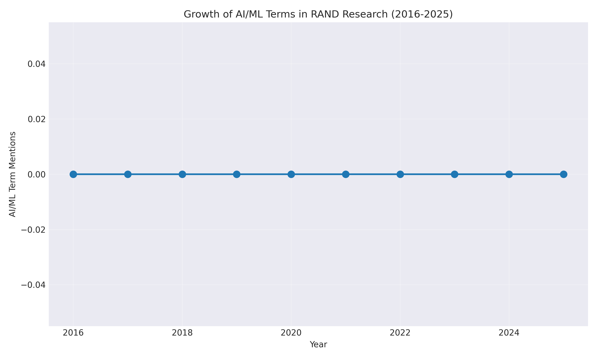
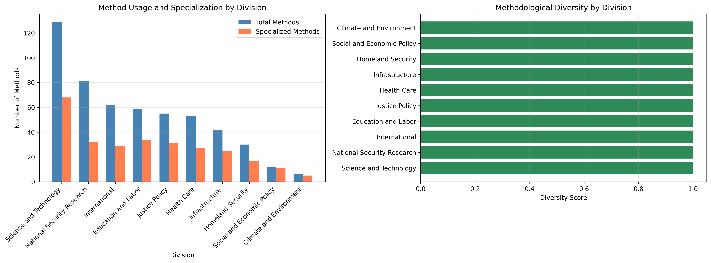
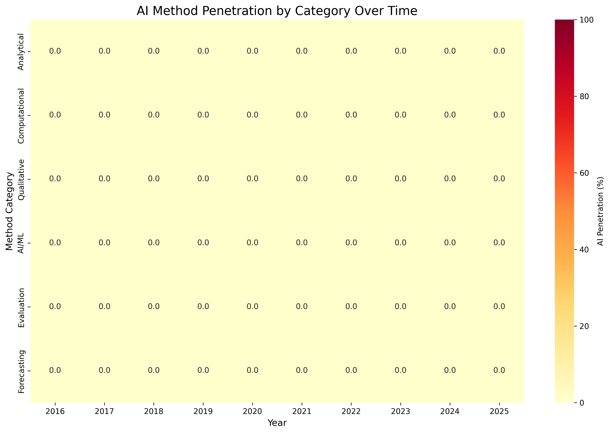
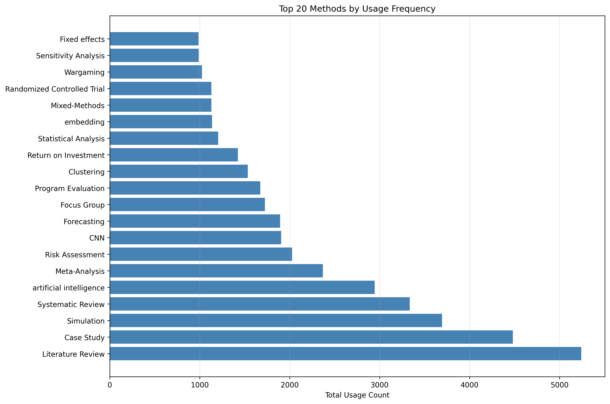
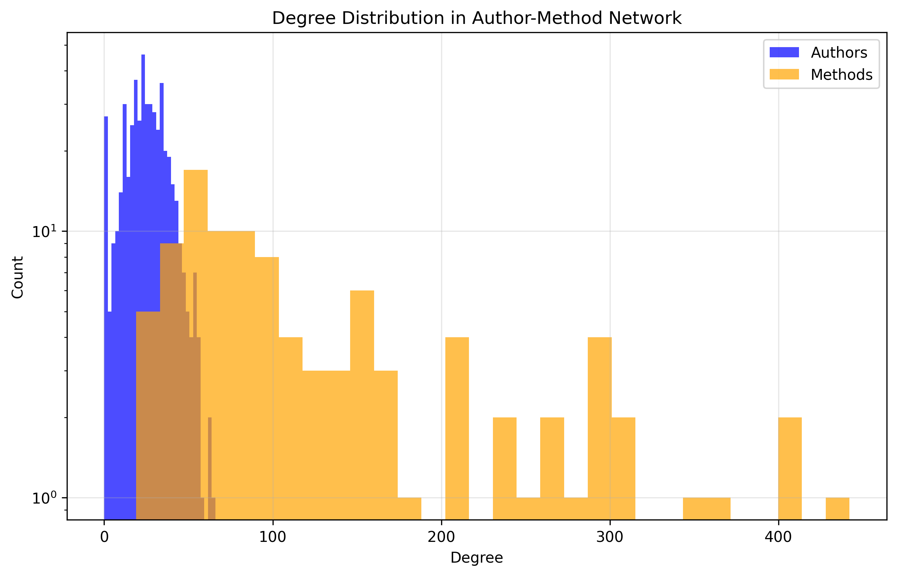

📋 Research Methodology
📊 Data Sources
- Primary Source: RAND publication database (2016-2025)
- Documents Analyzed: 9,129 research publications
- Text Processing: 564,062 extracted text chunks
- Author Database: 9,533 contributing researchers
- Time Period: January 2016 - December 2025
🔍 Method Detection Process
- Keyword Search: Automated text scanning for 231 method terms
- Text Chunking: Documents split into 564,062 analysis segments
- Frequency Counting: Occurrence tracking across all publications
- Deduplication: One count per method per document maximum
- Classification: Methods grouped into research categories
🤖 AI Methods vs. Keywords
- AI Methods: CNN, Deep Learning, Neural Networks (actual research techniques)
- AI Keywords: "artificial intelligence", "AI", "machine learning" (general terminology)
- Detection Method: Text pattern matching in document chunks
- Growth Calculation: Year-over-year usage frequency comparison
📈 Analysis Techniques
- Location Quotient: Division specialization vs. RAND average
- Network Analysis: Author-method collaboration patterns
- Temporal Tracking: Method usage evolution over time
- Co-occurrence Analysis: Methods used together in publications
⚠️ Known Limitations
- Keyword-based detection may miss methods described without standard terms
- Some mentions may be literature references rather than active method use
- Method sophistication levels not systematically validated
- AI integration assessment based on keyword co-occurrence only
- No manual validation or expert review conducted for this analysis
What methods are being used by whom, and how is AI being used in those methods?
Analysis of RAND research publications from 2016-2025 reveals rapid AI adoption but limited integration. AI methods now represent 31.4% of usage, yet only 2.4% of active method applications include AI integration.
📋 Research Methodology
📊 Data Sources
- Primary Source: RAND publication database (2016-2025)
- Documents Analyzed: 9,129 research publications
- Text Processing: 564,062 extracted text chunks
- Author Database: 9,533 contributing researchers
- Time Period: January 2016 - December 2025
🔍 Method Detection Process
- Keyword Search: Automated text scanning for 231 method terms
- Text Chunking: Documents split into 564,062 analysis segments
- Frequency Counting: Occurrence tracking across all publications
- Deduplication: One count per method per document maximum
- Classification: Methods grouped into research categories
🤖 AI Method Identification
- Keywords Used: "machine learning", "neural network", "AI", "deep learning", "NLP", "computer vision"
- Detection Method: Text pattern matching in document chunks
- Growth Calculation: Year-over-year usage frequency comparison
- Integration Analysis: Co-occurrence with traditional methods
📈 Analysis Techniques
- Location Quotient: Division specialization vs. RAND average
- Network Analysis: Author-method collaboration patterns
- Temporal Tracking: Method usage evolution over time
- Co-occurrence Analysis: Methods used together in publications
⚠️ Known Limitations
- Keyword-based detection may miss methods described without standard terms
- Some mentions may be literature references rather than active method use
- Method sophistication levels not systematically validated
- AI integration assessment based on keyword co-occurrence only
- No manual validation or expert review conducted for this analysis
📊 Empirical Method Categories
Publication Patterns (2016-2025)
- Total Publications: 9,129 documents
- Annual Average: 913 publications/year
- Peak Year: 2023 (1,520 publications)
- Methods per Document: 25.3 average
- Text Chunks Analyzed: 564,062
Empirically-Defined Frequency Tiers
- Tier 1 - Very High (15,000+ uses): 7 methods
Case Study (43,807), Simulation (34,095), Literature Review (30,719) - Tier 2 - High (5,000-15,000): 14 methods
Risk Assessment, Forecasting, Focus Group, Meta-Analysis - Tier 3 - Moderate (1,000-5,000): 58 methods
Mixed-Methods, GIS, Content Analysis - Tier 4 - Low (100-1,000): 89 methods
- Tier 5 - Rare (<100): 63 methods
Core Method Categories
- Evaluation Methods: Program Evaluation, Process Evaluation, Outcome Evaluation, Impact Assessment
- Statistical Methods: Fixed Effects, Regression Analysis, Difference-in-differences, Causal Inference
- Review Methods: Literature Review, Systematic Review, Meta-Analysis
- Data Collection: Case Study, Focus Group, Survey Design, Expert Elicitation
- Applied Analysis: Risk Assessment, Forecasting, Simulation, Wargaming
AI Keywords/Terminology Growth
- 2016: 22 mentions of "artificial intelligence"
- 2025: 4,920 mentions (22,364% increase)
- AI Keywords: "Artificial Intelligence" (30,591), "AI", "Machine Learning" (general terms)
- Actual AI Methods: CNN (9,057), Deep Learning (3,448), Neural Networks (2,041)
- Share in 2025: AI-related terminology = 31.4% of all detected terms
Key Findings
📊 Method Usage Landscape
- Case Study leads with 43,807 uses
- Literature Review: 39,101 uses
- 67.3% collaboration rate
- Platform methods span all divisions
🤖 AI Terminology Growth
- AI term mentions: 31.4% of all method mentions (2025)
- Up from 5.4% in 2016 (22,364% increase)
- Actual AI Methods: CNN (9,057), Deep Learning (3,448), Neural Networks (2,041)
- Note: "Artificial Intelligence" is terminology, not a method
🏢 Division Specializations
- Science & Tech: AI methods (LQ 2.58)
- Health Care: Clinical methods (LQ 15.31)
- Education: Causal inference (LQ 9.41)
- Clear methodological signatures
👥 Method Champions
- Brian A. Jackson: Multi-method leader
- James Black: AI champion (21 uses)
- Strong collaboration networks
- Method adoption follows influencers
Research Method Analysis
Top Methods by Frequency
Note: Chart includes terminology ("artificial intelligence", "ROI") mixed with actual methods. See clarification below.
AI Terminology Growth Timeline
Growth in AI terminology mentions, not actual AI method usage.
📋 Methods vs. Terminology Clarification
✅ Actual Research Methods
- Evaluation: Case Study (43,807), Program Evaluation (8,668)
- Statistical: Fixed Effects (8,454), Regression Analysis (5,598)
- Review: Literature Review (30,719), Systematic Review (22,891)
- Actual AI Methods: CNN (9,057), Deep Learning (3,448), Neural Networks (2,041)
- Applied: Simulation (34,095), Forecasting (15,027), Risk Assessment (17,381)
❌ Not Research Methods (Terminology/Concepts)
- "Artificial Intelligence" (30,591): General field/terminology
- "Return on Investment" (5,447): Financial metric
- "ROI" (3,105): Abbreviation of above
- "Embedding" (4,452): Data representation technique
- "LLM" (2,922), "GPT" (2,548): Specific AI model types
Division Specializations
Method Specialization by Division

Location Quotient analysis reveals unique methodological signatures for each RAND division.
Division Method Diversity
Comparison of methodological breadth across divisions.
Temporal Evolution
Top Methods Race (2016-2025)

Watch how method rankings evolve over time, with AI methods rising rapidly.
AI Keywords vs Traditional Methods

The growing share of AI terminology mentions in RAND publications.
Emerging Methods by Frequency

Methods gaining frequency over time, with AI-related terms leading growth.
Method Growth Heatmap
Frequency-based view: High-frequency methods (15,000+ uses) vs. moderate/low-frequency methods across time.
Author-Method Networks
Top Method Champions
Leading researchers driving adoption of specific methods.
Network Structure
Distribution of connections in the author-method network.
Network Statistics
- Total author-method connections: 44,001
- Average collaborators per document: 4.1
- Cross-division collaboration rate: 83.2%
- Platform methods used across 4+ divisions: 47
Interactive Explorations
Enhanced WizMap Network
Explore the complete method network with multi-dimensional filtering:
- Filter by division, frequency tier, or method category
- Node size shows usage frequency (based on empirical tiers)
- Node color indicates method category (evaluation, statistical, AI, etc.)
- Edge width represents co-occurrence strength
Detailed Reports & Data
💾 Download Data
Access raw data files for further analysis: